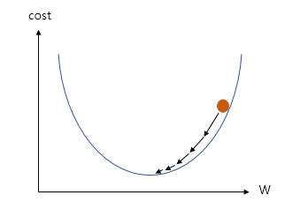
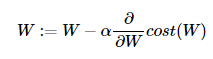
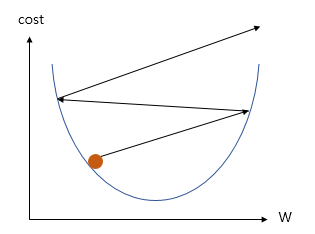

전 단계에서 배운 비용 함수의 값을 최소로 하는 W와 b를 찾는 방법들을 최적화(Optimizer) 알고리즘이라고 부릅니다.
이 옵티마이저 알고리즘을 통해 적절한 W와 b를 찾아내는 과정을 머신 러닝에서 학습(training)이라고 부릅니다.
경사하강법(Gradient Descent)은 가장 기본적인 옵티마이저 알고리즘중 하나입니다.
W와 cost의 관계를 그래프로 표현하면 다음과 같습니다.

Gradient Descent는 cost(W)를 최소로 하는 W를 cost(W)의 기울기를 통해 찾아내는 과정입니다.
위 그림에서 어떤 W값의 cost(W)의 기울기가 양수라면 W의 값이 감소 되어야 하고, 음수라면 W의 값이 증가 해야 합니다.
이를 수식으로 표현하면 다음과 같습니다.

여기서cost(W)의 기울기 값에 따라 얼마나 W의 값을 변경시켜줄지를 결정하는 α는 학습률(learning rate)이라 합니다.

위 그림처럼 α 값에 따라 최적의 W값을 찾지 못하는 경우도 있기 때문에 적당한 α값을 설정하는 것이 중요합니다.